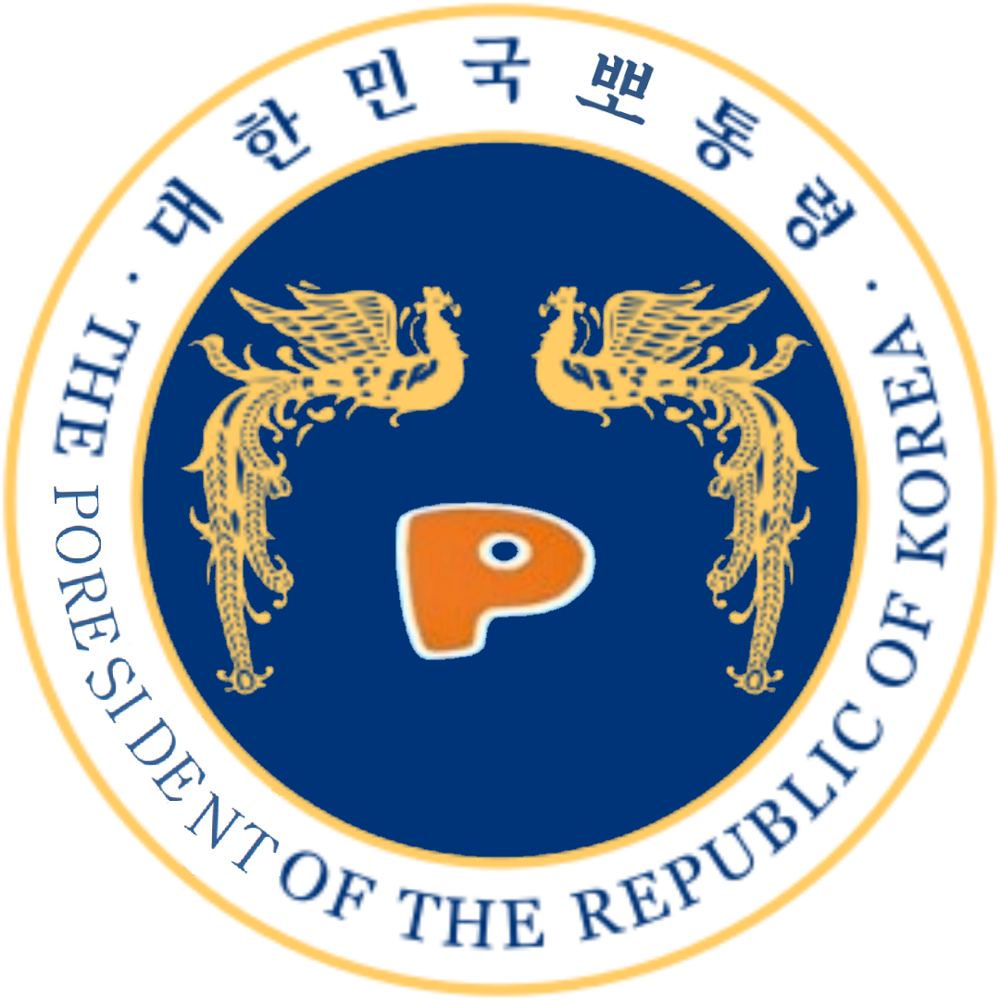

ㅤ여기에서 설명드렸다시피, 황동현 뽀통령은 당신의 온화함과 인자함 그리고 순수함이 그의 안면에까지 드러나 타인의 존경을 받아 胞露露[포로로](세포 포, 이슬 로, 이슬 로): "세포까지 이슬과 같이 맑다"라는 뜻의 별명을 얻게 되었습니다.
ㅤ후에 황동현 뽀통령은 포로로라는 별명을 받고 "포"의 거센소리를 "뽀"로 고치어 주변인에 의해 뽀통령으로 추대되신 후 다음과 같은 선서를 하셨습니다.
"나는 방송법을 준수하고 동심을 보위하며 아동의 평화적 갈등해소와 상상의 자유와 선심의 증진 및 아동문화의 창달에 노력하여 뽀통령으로서의 직책을 성실히 수행할 것을 국민 앞에 엄숙히 선서합니다."
이처럼 훌륭하신 황 뽀통령께서는 백와대 내 직원과 함께 민생을 위하여 차분하고 진지하게 토의하십니다.